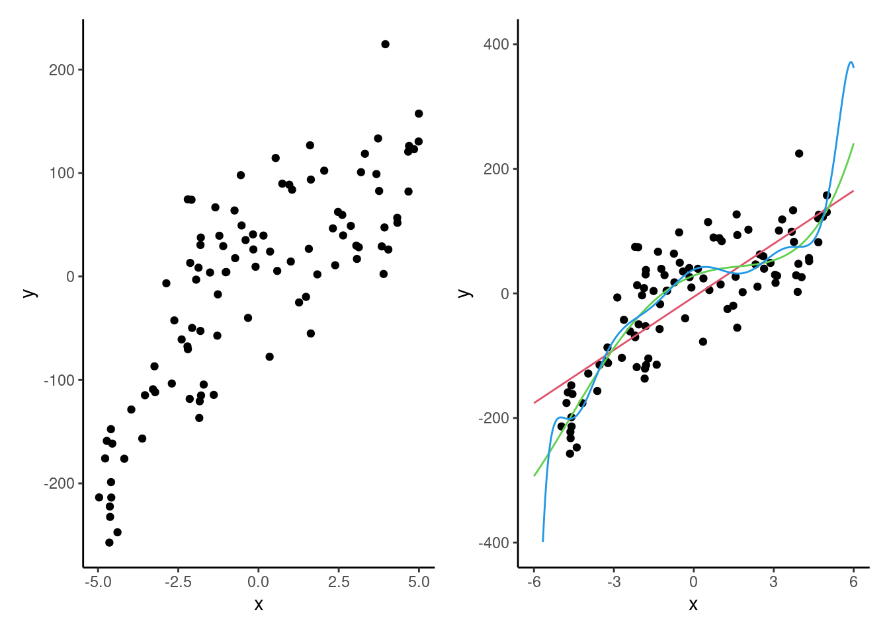
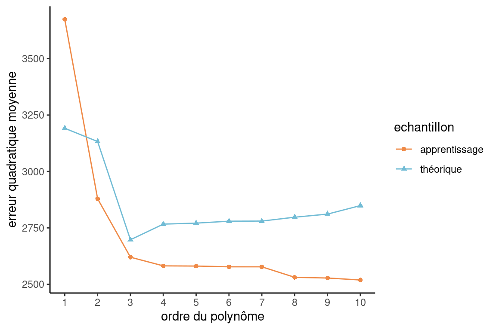
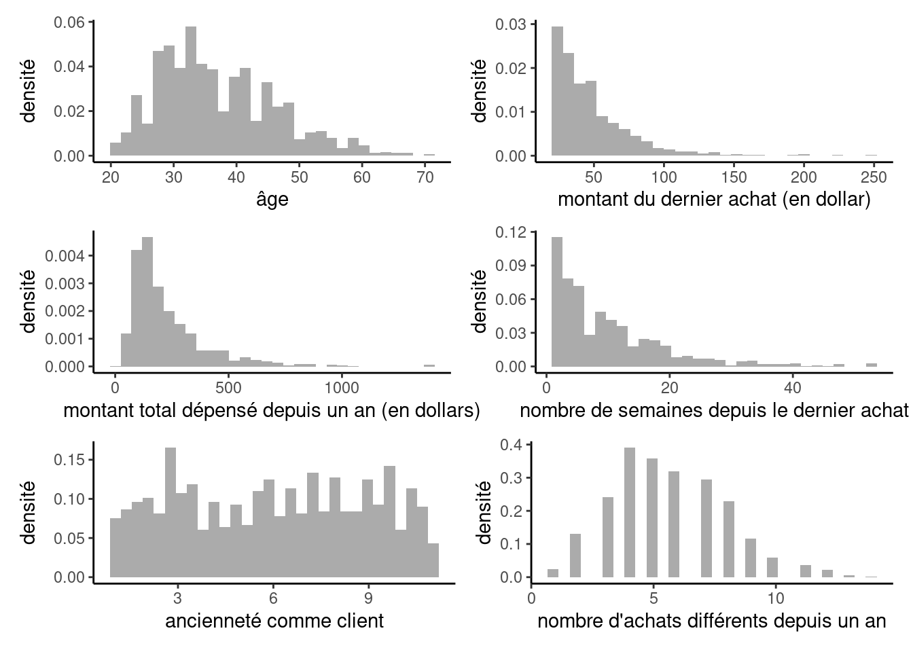
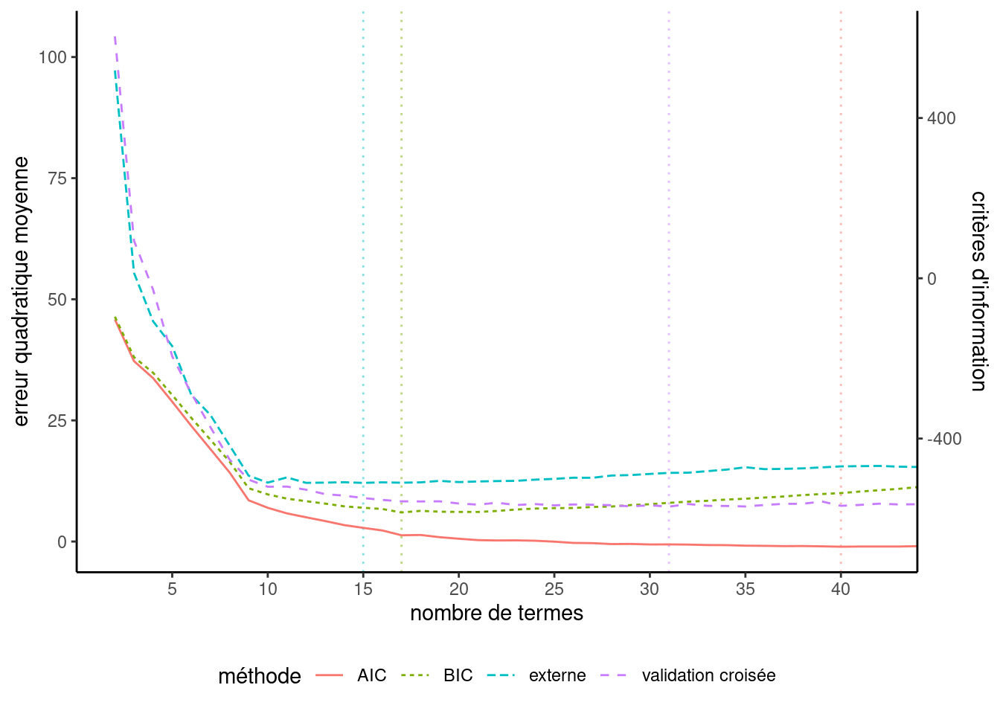

3 Sélection de variables et de modèles
Ce chapitre présente des principes, outils et méthodes très généraux pour choisir un « bon » modèle. Nous allons principalement utiliser la régression linéaire pour illustrer les méthodes en supposant que tout le monde connaît ce modèle de base. Les méthodes présentées sont en revanche très générales et peuvent être appliquées avec n’importe quel autre modèle (régression logistique, arbres de classification et régression, réseaux de neurones, analyse de survie, etc.)
L’expression « sélection de variables » fait référence à la situation où l’on cherche à sélectionner un sous-ensemble de variables à inclure dans notre modèle à partir d’un ensemble de variables \(X_1, \ldots, X_p\). Le terme variable ici inclut autant des variables distinctes que des transformations d’une ou plusieurs variables.
Par exemple, supposons que les variables \(\texttt{age}\), \(\texttt{sexe}\) et \(\texttt{revenu}\) soient trois variables explicatives disponibles. Nous pourrions alors considérer choisir entre ces trois variables. Mais aussi, nous pourrions considérer inclure \(\texttt{age}^2\), \(\texttt{age}^3\), \(\log(\texttt{age})\), etc. Nous pourrions aussi considérer des termes d’interactions entre les variables, comme \(\texttt{age} \cdot \texttt{revenu}\) ou \(\texttt{age}\cdot\texttt{revenu}\cdot\texttt{sexe}\). Le problème est alors de trouver un bon sous-ensemble de variables parmi toutes celles considérées.
L’expression « sélection de modèle » est un peu plus générale. D’une part, elle inclut la sélection de variables car, pour une famille de modèles spécifiques (régression linéaire par exemple), choisir un sous-ensemble de variables revient à choisir un modèle. D’autre part, elle fait référence à la situation où l’on cherche à trouver le meilleur modèle parmi des modèles de natures différentes. Par exemple, on pourrait choisir entre une régression linéaire, un arbre de régression, une forêt aléatoire, un réseau de neurones, etc.
3.1 Sélection de variables et de modèles selon les buts de l’étude
Nous disposons d’une variable réponse \(Y\) et d’un ensemble de variables explicatives \(X_1, \ldots, X_p\). L’attitude à adopter dépend des buts de l’étude.
- 1e situation: On veut développer un modèle pour faire des prédictions sans qu’il soit important de tester formellement les effets des paramètres individuels.
Dans ce cas, on désire seulement que notre modèle soit performant pour prédire des valeurs futures de \(Y\). On peut alors baser notre choix de variable (et de modèle) en utilisant des outils qui nous guiderons quant aux performances prédictives futures du modèle (voir \(\mathsf{AIC}\), \(\mathsf{BIC}\) et validation croisée plus loin). On pourra enlever ou rajouter des variables et des transformations de variables au besoin afin d’améliorer les performances prédictives. Les méthodes que nous allons voir concernent essentiellement ce contexte.
- 2e situation: On veut développer un modèle pour estimer les effets de certaines variables sur notre \(Y\) et tester des hypothèses de recherche spécifiques concernant certaines variables.
Dans ce cas, il est préférable de spécifier le modèle dès le départ selon des considérations scientifiques et de s’en tenir à lui. Faire une sélection de variables dans ce cas est dangereux car on ne peut pas utiliser directement les valeurs-p des tests d’hypothèses (ou les intervalles de confiance sur les paramètres) concernant les paramètres du modèle final car elles ne tiennent pas compte de la variabilité due au processus de sélection de variables.
Une bonne planification de l’étude est alors cruciale afin de collecter les bonnes variables, de spécifier le ou les bons modèles, et de s’assurer d’avoir suffisamment d’observations pour ajuster le ou les modèles désirés.
Si procéder à une sélection de variables est quand même nécessaire dans ce contexte, il est quand même possible de le faire en divisant l’échantillon en deux. La sélection de variables pourrait être alors effectuée avec le premier échantillon. Une fois qu’un modèle est retenu, on pourrait alors réajuster ce modèle avec le deuxième échantillon (sans faire de sélection de variables cette fois-ci). L’inférence sur les paramètres (valeurs-p, etc.) sera alors valide. Le désavantage ici qu’il faut avoir une très grande taille d’échantillon au départ afin d’être en mesure de le diviser en deux.
3.2 Estimation de la performance
Il est préférable d’avoir un modèle un peu trop complexe qu’un modèle trop simple. Plaçons-nous dans le contexte de la régression linéaire et supposons que le vrai modèle est inclus dans le modèle qui a été ajusté. Il y a donc des variables en trop dans le modèle qui a été ajusté: ce dernier est dit surspécifié.
Par exemple, supposons que le vrai modèle est \(Y=\beta_0+\beta_1X_1+\varepsilon\) mais que c’est le modèle \(Y=\beta_0+\beta_1X_1+\beta_2X_2+\varepsilon\) qui a été ajusté. Dans ce cas, règle générale, les estimateurs des paramètres et les prédictions provenant du modèle sont sans biais. Mais leurs variances estimées seront un peu plus élevées car on estime des paramètres pour des variables superflues.
Pour illustrer ce point, j’ai simulé des données avec deux variables explicatives corrélées et \(\beta_0 = 20\), \(\beta_1=5\) et \(\beta_2 = 0\).
Tableau 3.1: Surspécification de modèle de régression linéaire pour des données simulées.
| coefficient | borne inf. | borne sup. | |
|---|---|---|---|
| (cst) | 19.95 | 19.28 | 20.62 |
| X1 | 2.74 | 2.55 | 2.94 |
| coefficient | borne inf. | borne sup. | |
|---|---|---|---|
| (cst) | 20.16 | 19.88 | 20.44 |
| X1 | 1.93 | 1.84 | 2.03 |
| X2 | 5.06 | 4.74 | 5.38 |
Une fois qu’on a obtenu l’estimation des coefficients et les intervalles de confiance, on peut les comparer aux vraies valeurs (soit \(\beta_0 = 20\), \(\beta_1=5\) et \(\beta_2 = 0\)) et vérifier si ces dernières se trouvent dans l’intervalle de confiance. Le Tableau 3.1 indique l’effet pour l’inférence de ces spécifications (avec des différences d’estimation, mais non de prédictions, qui sont dues à la colinéarité entre variables).
Supposons à l’inverse qu’il manque des variables dans le modèle ajusté et que le modèle ajusté est sous-spécifié. Par exemple, supposons que le vrai modèle est \(Y=\beta_0+\beta_1X_1+\beta_2X_2+\varepsilon\), mais que c’est le modèle \(Y=\beta_0+\beta_1X_1+\varepsilon\) qui est ajusté. Dans ce cas, généralement, les estimateurs des paramètres et les prédictions sont biaisés. Le Tableau 3.1 montre les estimations du modèle: les vraies valeurs sont \(\beta_0=20\), \(\beta_1 = 2\) et \(\beta_2 = 5\).
Tableau 3.2: Sous-spécification de modèle de régression linéaire pour des données simulées.
| coefficient | borne inf. | borne sup. | |
|---|---|---|---|
| (cst) | 20 | 19.74 | 20.31 |
| X1 | 2 | 1.91 | 2.08 |
| coefficient | borne inf. | borne sup. | |
|---|---|---|---|
| (cst) | 20.05 | 19.77 | 20.33 |
| X1 | 1.92 | 1.83 | 2.02 |
| X2 | 0.47 | 0.14 | 0.79 |
Ainsi, il est généralement préférable d’avoir un modèle légèrement surspécifié qu’un modèle sous-spécifié. Plus généralement, il est préférable d’avoir un peu trop de variables dans le modèle que de prendre le risque d’omettre une ou plusieurs variables importantes. Il faut faire attention et ne pas tomber dans l’excès et avoir un modèle trop complexe (avec trop de variables inutiles) car il pourrait souffrir de surajustement (over-fitting). Les exemples qui suivent illustreront ce fait.
3.2.1 Surajustement
Cette section traite de l’optimisme de l’évaluation d’un modèle (trop beau pour être vrai) lorsqu’on utilise les mêmes données qui ont servies à l’ajuster pour évaluer sa performance. Un principe fondamental lorsque vient le temps d’évaluer la performance prédictive d’un modèle est le suivant : si on utilise les mêmes observations pour évaluer la performance d’un modèle que celles qui ont servi à l’ajuster (à estimer le modèle et ses paramètres), on va surestimer sa performance. Autrement dit, notre estimation de l’erreur que fera le modèle pour prédire des observations futures sera biaisée à la baisse. Ainsi, il aura l’air meilleur que ce qu’il est en réalité. C’est comme si on demandait à un cinéaste d’évaluer son dernier film. Comme c’est son film, il n’aura généralement pas un regard objectif. C’est pourquoi on aura tendance à se fier à l’opinion d’un critique.
On cherchera donc à utiliser des outils et méthodes qui nous donneront l’heure juste (une évaluation objective) quant à la performance prédictive d’un modèle.
3.2.2 Principes généraux
Les idées présentées ici seront illustrées à l’aide de la régression linéaire. Par contre, elles sont valides dans à peu près n’importe quel contexte de modélisation.
Plaçons-nous d’abord dans un contexte plus général que celui de la régression linéaire. Supposons que l’on dispose de \(n\) observations indépendantes sur (\(Y, X_1, \ldots, X_p\)) et que l’on a ajusté un modèle \(\widehat{f}(X_1, \ldots, X_p)\), avec ces données, pour prédire une variable continue \(Y\).
Ce modèle peut être un modèle de régression linéaire, \[\begin{align*} \widehat{f}(X_1, \ldots, X_p) = \widehat{\beta}_0 + \widehat{\beta}_1X_1 + \cdots + \widehat{\beta}_pX_p \end{align*}\] mais il pourrait aussi avoir été construit selon d’autres méthodes (réseau de neurones, arbre de régression, forêt aléatoire, etc.) Une manière de quantifier la performance prédictive du modèle est l’erreur quadratique moyenne (mean squared error), \[\begin{align*} \mathsf{EQM}=\mathsf{E}\left[\left\{(Y-\widehat{f}(X_1, \ldots, X_p)\right\}^2\right] \end{align*}\] lorsque (\(Y, X_1, \ldots, X_p\)) est choisi au hasard dans la population. Cette quantité mesure l’erreur théorique (la différence au carré entre la vraie valeur de \(Y\) et la valeur prédite par le modèle) que fait le modèle en moyenne pour l’ensemble de la population. Plus cette quantité est petite, meilleur est le modèle. Le problème est que l’on ne peut pas la calculer car on n’a pas accès à toute la population. Tout au plus peut-on essayer de l’estimer ou bien d’estimer une fonction qui, sans l’estimer directement, classifiera les modèles dans le même ordre qu’elle.
Une première idée est d’estimer l’erreur quadratique moyenne de l’échantillon d’apprentissage (training mean squared error), \[\begin{align*} \widehat{\mathsf{EQM}}_a= \frac{1}{n}\sum_{i=1}^n \left\{Y_i-\widehat{f}(X_{i1}, \ldots, X_{ip})\right\}^2. \end{align*}\]
Malheureusement, selon le principe fondamental de la section précédente, cette quantité n’est pas un bon estimateur de l’\(\mathsf{EQM}\). En effet, comme on utilise les mêmes observations que celles qui ont estimé le modèle, l’\(\widehat{\mathsf{EQM}}_a\) aura tendance à toujours diminuer lorsqu’on augmente la complexité du modèle (par exemple, lorsqu’on augmente le nombre de paramètres). L’\(\widehat{\mathsf{EQM}}_a\) tend à surestimer la qualité du modèle en sous-estimant l’\(\mathsf{EQM}\) et le modèle a l’air meilleur qu’il ne l’est en réalité.
3.2.3 Présentation de l’exemple
Cet exemple simple sur le choix d’un modèle polynomial en régression linéaire servira à illustrer le fait qu’on ne peut utiliser directement les mêmes données qui ont servi à ajuster un modèle pour évaluer sa performance.
Nous disposons de 100 observations sur une variable cible \(Y\) et d’une seule variable explicative \(X\) dans la base de données selection1_train. Nous voulons considérer des modèles polynomiaux (en \(X\)) afin d’en trouver un bon pour prédire \(Y\). Un modèle polynomial est un modèle de la forme \(Y=\beta_0 + \beta_1X+\cdots+\beta_kX^k+\varepsilon\). Le cas \(k=1\) correspond à un modèle linéaire simple, \(k=2\) à un modèle cubique, \(k=3\) à un modèle cubique, etc. Notre but est de déterminer l’ordre (\(k\)) du polynôme qui nous donnera un bon modèle. Voici d’abord le graphe de ces 100 observations de l’échantillon d’apprentissage et les valeurs ajustées de polynômes d’ordre 1, 4 et 10.

Ces données ont été obtenues par simulation et le vrai modèle sous-jacent (celui qui a généré les données) est le modèle cubique, c’est-à-dire le modèle d’ordre \(k=3\).
J’ai ajusté tour à tour à tour les modèles polynomiaux jusqu’à l’ordre 10, avec l’échantillon d’apprentissage de taille 100. C’est-à-dire, le modèle linéaire avec un polynôme d’ordre \(k=1\) (linéaire), \(k=2\) (quadratique), etc., jusqu’à \(k=10\). J’ai ensuite obtenu la valeur de l’erreur quadratique moyenne d’apprentissage pour chacun de ces modèles. En pratique, on ne pourrait pas calculer l’erreur quadratique moyenne de généralization puisqu’on ne connaît pas le vrai modèle. J’ai fait une approximation de cette dernière en simulant 100 000 observations du vrai modèle (selection1_test), en obtenant la prédiction pour chacune de ces 100 000 observations en utilisant le modèle d’ordre \(k\) ajusté sur les données d’apprentissage et en calculant l’erreur quadratique moyenne par la suite.

On voit clairement dans la Figure 3.2 que l’\(\widehat{\mathsf{EQM}}_a\) diminue en fonction de l’ordre sur l’échantillon d’apprentissage: plus le modèle est complexe, plus l’erreur observée sur l’échantillon d’apprentissage est petite. La courbe \(\mathsf{EQM}\) donne l’heure juste, car il s’agit d’une estimation de la performance réelle des modèles sur de nouvelles données. On voit que le meilleur modèle est donc le modèle cubique (\(k=3\)), ce qui n’est pas surprenant puisqu’il s’agit du modèle que utilisé pour générer les données. On peut aussi remarquer d’autres éléments intéressants. Premièrement, on obtient un bon gain en performance (\(\mathsf{EQM}\)) en passant de l’ordre \(2\) à l’ordre \(3\). Ensuite, la perte de performance en passant de l’ordre \(3\) à \(4\), et ensuite à des ordres supérieurs n’est pas si sévère, même si elle est présente. Cela illustre empiriquement qu’il est préférable d’avoir un modèle un peu trop complexe que d’avoir un modèle trop simple. Il serait beaucoup plus grave pour la performance de choisir le modèle avec \(k=2\) que celui avec \(k=4\).
En pratique par contre, on n’a pas accès à la population : les 100 000 observations qui ont servi à estimer l’\(\mathsf{EQM}\) théorique ne seront pas disponible. Si on a seulement l’échantillon d’apprentissage, soit 100 observations dans notre exemple, comment faire alors pour choisir le bon modèle? C’est ce que nous verrons à partir de la section suivante.
Mais avant cela, nous allons discuter un peu plus en détail au sujet de la régression linéaire et d’une mesure très connue, le coefficient de détermination (\(R^2\)). Supposons que l’on a ajusté un modèle de régression linéaire \[\begin{align*} \widehat{f}(X_1, \ldots, X_p) = \widehat{Y}=\widehat{\beta}_0 + \widehat{\beta}_1X_1+ \cdots + \widehat{\beta}_p X_p. \end{align*}\] La somme du carré des erreurs (\(\mathsf{SCE}\)) pour notre échantillon est \[\begin{align*} \mathsf{SCE}=\sum_{i=1}^n (Y_i - \widehat{\beta}_0 - \widehat{\beta}_1X_1 - \cdots - \widehat{\beta}_p X_p)^2 = \sum_{i=1}^n (Y_i-\widehat{Y}_i)^2. \end{align*}\] On peut démontrer que si on ajoute une variable quelconque au modèle, la valeur de la somme du carré des erreurs va nécessairement baisser. Il est facile de se convaincre de cela. En régression linéaire, les estimations sont obtenues par la méthode des moindres carrés qui consiste justement à minimiser la \(\mathsf{SCE}\). Ainsi, en ajoutant une variable \(X_{p+1}\) au modèle, la \(\mathsf{SCE}\) ne peut que baisser car, dans le pire des cas, le paramètre de la nouvelle variable sera \(\widehat{\beta}_{p+1}=0\) et on retombera sur le modèle sans cette variable. C’est pourquoi, la quantité \(\widehat{\mathsf{EQM}}_a=\mathsf{SCE}/n\) ne peut être utilisée comme outil de sélection de modèles en régression linéaire.
Nous venons d’ailleurs d’illustrer cela avec notre exemple sur les modèles polynomiaux. En effet, augmenter l’ordre du polynôme de \(1\) revient à ajouter une variable. Le coefficient de détermination (\(R^2\)) est souvent utilisé, à tort, comme mesure de qualité du modèle. Il peut s’interpréter comme étant la proportion de la variance de \(Y\) qui est expliquée par le modèle.
Le coefficient de détermination est \[\begin{align*} R^2=\{\mathsf{cor}(\boldsymbol{y}, \widehat{\boldsymbol{y}})\}^2 = 1-\frac{\mathsf{SCE}}{\mathsf{SCT}}, \end{align*}\] où \(\mathsf{SCT}=\sum_{i=1}^n (Y_i-\overline{Y})^2\) est la somme des carrés totale calculée en centrant les observations. La somme des carrés totale, \(\mathsf{SCT}\), ne varie pas en fonction du modèle. Ainsi, on voit que le \(R^2\) va méchaniquement augmenter lorsqu’on ajoute une variable au modèle (car la \(\mathsf{SCE}\) diminue). C’est pourquoi on ne peut pas l’utiliser comme outil de sélection de variables.
Le problème principal que nous avons identifié jusqu’à présent afin d’être en mesure de bien estimer la performance d’un modèle est le suivant : si on utilise les mêmes observations pour évaluer la performance d’un modèle que celles qui ont servi à l’ajuster, on va surestimer sa performance.
Il existe deux grandes approches pour contourner ce problème lorsque le but est de faire de la sélection de variables ou de modèle :
- utiliser les données de l’échantillon d’apprentissage (en échantillon) et pénaliser la mesure d’ajustement (ici \(\widehat{\mathsf{EQM}}_a\)) pour tenir compte de la complexité du modèle (par exemple, à l’aide de critères d’informations).
- tenter d’estimer l’\(\mathsf{EQM}\) directement sur d’autres données (hors échantillon) en utilisant des méthodes de rééchantillonnage, notamment la validation croisée ou la validation externe (division de l’échantillon).
3.2.4 Pénalisation et critères d’information
Plaçons-nous dans le contexte de la régression linéaire pour l’instant. Nous avons déjà utilisé les critères \(\mathsf{AIC}\) et \(\mathsf{BIC}\) en analyse factorielle. Il s’agit de mesures qui découlent d’une méthode d’estimation des paramètres, la méthode du maximum de vraisemblance.
Il s’avère que les estimateurs des paramètres obtenus par la méthode des moindres carrés en régression linéaire sont équivalents à ceux provenant de la méthode du maximum de vraisemblance si on suppose la normalité des termes d’erreurs du modèle. Ainsi, dans ce cas, nous avons accès aux \(\mathsf{AIC}\) et \(\mathsf{BIC}\), deux critères d’information définis pour les modèles dont la fonction objective est la vraisemblance (qui mesure la probabilité des observations sous le modèle postulé suivant une loi choisie par l’utilisateur). La fonction de vraisemblance \(\mathcal{L}\) et la log-vraisemblance \(\ell\) mesurent l’adéquation du modèle.
Supposons que nous avons ajusté un modèle avec \(p\) paramètres en tout (incluant l’ordonnée à l’origine). En régression linéaire, le critère d’information d’Akaike, \(\mathsf{AIC}\), est \[\begin{align*} \mathsf{AIC} &=-2 \ell(\widehat{\boldsymbol{\beta}}, \widehat{\sigma}^2) +2p = n \ln (\mathsf{EQM}) + 2p + \text{constante}, \end{align*}\] tandis que le critère d’information bayésien de Schwartz, \(\mathsf{BIC}\), est défini par \[\begin{align*} \mathsf{BIC} &=-2 \ell(\widehat{\boldsymbol{\beta}}, \widehat{\sigma}^2) + p\ln(n)=n \ln (\mathsf{EQM}) + p\ln(n) + \text{constante}. \end{align*}\] Plus la valeur du \(\mathsf{AIC}\) (ou du \(\mathsf{BIC}\)) est petite, meilleur est l’adéquation. Que se passe-t-il lorsqu’on ajoute un paramètre à un modèle? D’une part, la somme du carré des erreurs va méchaniquement diminuer tout comme l’erreur quadratique moyenne \(\textsf{EQM} = \textsf{SCE}/n\), donc la quantité \(n \ln (\mathsf{EQM})\) va diminuer. D’autre part, la valeur de \(p\) augmente de \(1\). Ainsi, le \(\mathsf{AIC}\) peut soit augmenter, soit diminuer, lorsqu’on ajoute un paramètre; idem pour le \(\mathsf{BIC}\). Par exemple, le \(\mathsf{AIC}\) va diminuer seulement si la baisse de la somme du carré des erreurs est suffisante pour compenser le fait que le terme \(2p\) augmente à \(2 (p+1)\).
Ces critères pénalisent l’ajout de variables afin de se prémunir contre le surajustement. De plus, le \(\mathsf{BIC}\) pénalise plus que le \(\mathsf{AIC}\). Par conséquent, le critère \(\mathsf{BIC}\) va choisir des modèles contenant soit le même nombre, soit moins de paramètres que le \(\mathsf{AIC}\).
Les critères \(\mathsf{AIC}\) et \(\mathsf{BIC}\) peuvent être utilisés comme outils de sélection de variables en régression linéaire mais aussi beaucoup plus généralement avec d’autres méthodes basées sur la vraisemblance (analyse factorielle, régression logistique, etc.) En fait, n’importe quel modèle dont les estimateurs proviennent de la méthode du maximum de vraisemblance produira ces quantités. Nous donnerons des formules générales pour le \(\mathsf{AIC}\) et le \(\mathsf{BIC}\) dans le chapitre sur la régression logistique.
Le critère \(\mathsf{BIC}\) est le seul de ces critères qui est convergent. Cela veut dire que si l’ensemble des modèles que l’on considère contient le vrai modèle, alors la probabilité que le critère \(\mathsf{BIC}\) choisissent le bon modèle tend vers 1 lorsque \(n\) tend vers l’infini. Il faut mettre cela en perspective : il est peu vraisemblable que \(Y\) ait été généré exactement selon un modèle de régression linéaire, car le modèle de régression n’est qu’une approximation de la réalité. Certains auteurs trouvent que le \(\mathsf{BIC}\) est quelquefois trop sévère (il choisit des modèles trop simples) pour les tailles d’échantillons finies. Dans certaines applications, cette parcimonie est utile, mais il n’est pas possible de savoir d’avance lequel de ces deux critères (\(\mathsf{AIC}\) et \(\mathsf{BIC}\)) sera préférable pour un problème donné.
Il est facile d’obtenir le \(\mathsf{AIC}\) et \(\mathsf{BIC}\) avec les méthodes AIC et BIC. On illustre ceci avec le modèle cubique:
data(polynome, package = "hecmulti")
# Ajuster un polynôme de degré trois (modèle cubique)
mod_cub <- lm(y ~ poly(x, 3),
data = polynome)
summary(mod_cub) # Tableau résumé des coefficients
AIC(mod_cub)
BIC(mod_cub)Le Tableau 3.3 résume ces quantités pour tous les modèles de l’ordre 1 à l’ordre 10.
| \(\mathsf{EQM}\) | \(\widehat{\mathsf{EQM}}_a\) | \(R^2\) | \(\mathsf{AIC}\) | \(\mathsf{BIC}\) | \(\mathsf{VC}_{10}\) | |
|---|---|---|---|---|---|---|
| 1 | 3191 | 3674 | 0.65 | 1111 | 1119 | 3675 |
| 2 | 3133 | 2879 | 0.73 | 1088 | 1099 | 2898 |
| 3 | 2697 | 2620 | 0.75 | 1081 | 1094 | 2676 |
| 4 | 2767 | 2582 | 0.75 | 1081 | 1097 | 2666 |
| 5 | 2771 | 2581 | 0.75 | 1083 | 1102 | 2711 |
| 6 | 2780 | 2578 | 0.75 | 1085 | 1106 | 2757 |
| 7 | 2780 | 2577 | 0.75 | 1087 | 1111 | 2788 |
| 8 | 2797 | 2531 | 0.76 | 1087 | 1113 | 2846 |
| 9 | 2811 | 2528 | 0.76 | 1089 | 1118 | 2896 |
| 10 | 2849 | 2519 | 0.76 | 1091 | 1122 | 2976 |
On voit dans le Tableau 3.3 que l’erreur quadratique moyenne des données d’apprentissage, \(\widehat{\mathsf{EQM}}_a\), diminue toujours à mesure qu’on ajoute des variables (c’est-à-dire, qu’on augmente l’ordre du polynôme); ces valeurs sont représentées dans la Figure 3.2. Les critères d’information, \(\mathsf{AIC}\) et \(\mathsf{BIC}\), ne sont pas sur la même échelle, mais le graphique de la Figure 3.3 illustre un comportement semblable à la vraie courbe de l’erreur quadratique moyenne théorique et suggèrent que le meilleur modèle est le modèle cubique (\(k=3\)), c’est-à-dire le vrai modèle. N’oubliez pas que ces critères sont calculés avec l’échantillon d’apprentissage (\(n=100\)), mais en pénalisant l’ajout de variables. On est ainsi en mesure de contrecarrer le problème provenant du fait qu’on ne peut pas utiliser directement le \(\widehat{\mathsf{EQM}}_a\).
Le \(\mathsf{AIC}\) et le \(\mathsf{BIC}\) sont des critères très utilisés et très généraux. Ils sont disponibles dès qu’on utilise la méthode du maximum de vraisemblance comme méthode d’estimation.
3.2.5 Validation externe
La deuxième grande approche après celle consistant à pénaliser le \(\widehat{\mathsf{EQM}}_a\) consiste à tenter d’estimer le \(\mathsf{EQM}\) directement sans utiliser deux fois les mêmes données. Nous allons voir deux telles méthodes ici, la validation externe (division de l’échantillon) et la validation croisée (cross-validation).
Ces deux méthodes s’attaquent directement au problème qu’on ne peut utiliser (sans ajustement) les mêmes données qui ont servi à estimer les paramètres d’un modèle pour estimer sa performance. Pour ce faire, l’échantillon de départ est divisé en deux, ou plusieurs parties, qui vont jouer des rôles différents.
L’idée de la validation externe est simple. Nous avons un échantillon de taille \(n\) que nous pouvons diviser au hasard en deux parties de tailles respectives \(n_1\) et \(n_2\) (\(n_1+n_2=n\)), soit
- un échantillon d’apprentissage (training) de taille \(n_1\) et
- un échantillon de validation (test) de taille \(n_2\).
L’échantillon d’apprentissage servira à estimer les paramètres du modèle. L’échantillon de validation servira à estimer la performance prédictive (par exemple estimer l’\(\mathsf{EQM}\)) du modèle. Comme cet échantillon n’a pas servi à estimer le modèle lui-même, il est formé de « nouvelles » observations qui permettent d’évaluer d’une manière réaliste la performance du modèle. Comme il s’agit de nouvelles observations, on n’a pas à pénaliser la complexité du modèle et on peut directement utiliser le critère de performance choisi, par exemple, l’erreur quadratique moyenne, c’est-à-dire, la moyenne des erreurs au carré pour l’échantillon de validation. Cette quantité est une estimation valable de l’\(\mathsf{EQM}\) de ce modèle. On peut faire la même chose pour tous les modèles en compétition et choisir celui qui a la meilleure performance sur l’échantillon de validation.
Cette approche possède plusieurs avantages. Elle est facile à implanter. Elle est encore plus générale que les critères \(\mathsf{AIC}\) et \(\mathsf{BIC}\). En effet, ces critères découlent de la méthode d’estimation du maximum de vraisemblance. Plusieurs autres types de modèles ne sont pas estimés par la méthode du maximum de vraisemblance (par exemple, les arbres, les forêts aléatoires, les réseaux de neurones, etc.) La performance de ces modèles peut toujours être estimée en divisant l’échantillon. Cette méthode peut donc servir à comparer des modèles de familles différentes. Par exemple, choisit-on un modèle de régression linéaire, une forêt aléatoire ou bien un réseau de neurones?
Cette approche possède tout de même un désavantage. Elle nécessite une grande taille d’échantillon au départ. En effet, comme on divise l’échantillon, on doit en avoir assez pour bien estimer les paramètres du modèle (l’échantillon d’apprentissage) et assez pour bien estimer sa performance (l’échantillon de validation).
La méthode consistant à diviser l’échantillon en deux (apprentissage et validation) afin de sélectionner un modèle est valide. Par contre, si on veut une estimation sans biais de la performance du modèle choisi (celui qui est le meilleur sur l’échantillon de validation), on ne peut pas utiliser directement la valeur observée de l’erreur de ce modèle sur l’échantillon de validation car elle risque de sous-évaluer l’erreur. En effet, supposons qu’on a 10 échantillons et qu’on ajuste 10 fois le même modèle séparément sur les 10 échantillons. Nous aurons alors 10 estimations différentes de l’erreur du modèle. Il est alors évident que de choisir la plus petite d’entre elles sous-estimerait la vraie erreur du modèle. C’est un peu ce qui se passe lorsqu’on choisit le modèle qui minimise l’erreur sur l’échantillon de validation. Le modèle lui-même est un bon choix, mais l’estimation de son erreur risque d’être sous-évaluée.
Une manière d’avoir une estimation de l’erreur du modèle retenu consiste à diviser l’échantillon de départ en trois (plutôt que deux). Aux échantillons d’apprentissage et de validation, s’ajoute un échantillon « test ». Cet échantillon est laissé de côté durant tout le processus de sélection du modèle qui est effectué avec les deux premiers échantillons tel qu’expliqué plus haut. Une fois un modèle retenu (par exemple celui qui minimise l’erreur sur l’échantillon de validation), on peut alors évaluer sa performance sur l’échantillon test qui n’a pas encore été utilisé jusque là. L’estimation de l’erreur du modèle retenu sera ainsi valide. Il est évident que pour procéder ainsi, on doit avoir une très grande taille d’échantillon au départ.
3.2.6 Validation croisée
Si la taille d’échantillon n’est pas suffisante pour diviser l’échantillon en deux et procéder comme nous venons de l’expliquer, la validation croisée est une bonne alternative. Cette méthode permet d’imiter le processus de division de l’échantillon.
Voici les étapes à suivre pour faire une validation croisée à \(K\) groupes (\(K\)-fold cross-validation) :
- Diviser l’échantillon au hasard en \(K\) parties \(P_1, P_2, \ldots, P_K\) contenant toutes à peu près le même nombre d’observations.
- Pour \(j = 1\) à \(K\),
- Enlever la partie \(j\).
- Estimer les paramètres du modèle en utilisant les observations des \(K-1\) autres parties combinées.
- Calculer la mesure de performance (par exemple la somme du carré des erreurs) de ce modèle pour le groupe \(P_j\).
- Combiner les \(K\) estimations de performance pour obtenir une mesure de performance finale.1
Pour l’erreur quadratique moyenne, cette dernière étape revient à additionner la somme du carré des erreurs avant de diviser par la taille de l’échantillon totale.
La validation croisée est coûteuse parce qu’on doit ajuster \(K\) fois le modèles. On recommande habituellement de prendre \(K=\min\{n^{1/2}, 10\}\) groupes (le choix de cinq ou 10 groupes sont ceux qui revient le plus souvent en pratique). Si on prend \(K=10\) groupes, alors chaque modèle est estimé avec 90% des données et on prédit ensuite le 10% restant. Comme on passe en boucle les 10 parties, chaque observation est prédite une et une seule fois à la fin. Il est important de souligner que les groupes sont formés de façon aléatoire et donc que l’estimé que l’on obtient peut être très variable, surtout si la taille de l’échantillon d’apprentissage est petite. Il arrive également que le modèle ajusté sur un groupe ne puisse pas être utilisé pour prédire les observations mises de côté, notamment si des variables catégorielles sont présentes mais qu’une modalité n’est présente que dans un des groupes; ce problème se présente en pratique si certaines classes ont peu d’observations. Un échantillonnage stratifié permet de pallier à cette lacune et de s’assurer d’une répartition plus homogène des variables catégorielles.
# Validation croisée avec k groupes
lmkfold <- function(formula, data, k, ...){
# Créer un accumulateur pour le calcul de l'EQM
accu <- 0
k <- as.integer(k) # nombre de groupes
n <- nrow(data) # nombre d'observations
# Permuter les indices des observatoins
gp <- sample.int(n, n, replace = FALSE)
# Créer une liste de k éléments avec les nos d'observations
folds <- split(gp, cut(seq_along(gp), k, labels = FALSE))
for(i in seq_len(k)){
# Extraire les indices des observations de la portion validation
g <- as.integer(unlist(folds[i]))
# Ajuster le modèles à toutes les données,
moins celles de la portion validation
fitlm <- lm(formula, data = data[-g,])
# ajouter l'erreur quadratique du pli de validation
accu <- accu +
sum((data[g, all.vars(formula)[1]] -
predict(fitlm, newdata=data[g,]))^2)
}
# Diviser par la taille de l'échantillon
# pour obtenir la moyenne
return(accu/n)
}
# Le paquet 'caret' a une fonction
# pour faire la validation croisée
cv_caret <-
caret::train(form = formula,
data = data,
method = "lm",
trControl = caret::trainControl(
method = "cv",
number = 10))
eqm_cv <- cv_caret$results$RMSE^2Le cas particulier \(K=n\) (en anglais leave-one-out cross validation, ou \(\mathsf{LOOCV}\)) consiste à enlever une seule observation, à estimer le modèle avec les \(n-1\) autres et à valider à l’aide de l’observation laissée de côté: on répète cette procédure pour chaque observation. Pour les modèles linéaires, il existe des formules explicites qui nous permettent d’éviter d’ajuster \(n\) régressions par moindre carrés. Cette forme de validation croisée tend à être trop optimiste.
Il faut garder en tête que le résultat de la validation croisée est aléatoire parce que la séparation des données en plis l’est également. La figure Figure 3.5, obtenue en répétant 100 fois la procédure et en calculant à chaque fois la performance de différents modèles polynomiaux, montre la variabilité des estimations. Plutôt que de répéter le calcul, si on a un nombre de groupes \(K\) suffisamment grand et assez d’observations par pli, on pourrait estimer la variabilité de la procédure directement. Posons \(\widehat{\mathsf{EQM}}_{\text{VC}, k}\) (\(k=1, \ldots, K\)) calculer l’erreur quadratique moyenne de chaque pli. On peut estimer l’écart-type empirique de cette moyenne via \[\begin{align*} \mathsf{sd}(\widehat{\mathsf{EQM}}_{\text{VC}}) = \frac{1}{K-1} \sum_{k=1}^{K} (\widehat{\mathsf{EQM}}_{\text{VC}, k}-\widehat{\mathsf{EQM}}_{\text{VC}})^2. \end{align*}\]
Revenons à notre exemple où une seule variable explicative est disponible et où l’on cherche à déterminer un bon modèle polynomial. La dernière colonne de Tableau 3.3, \(\mathsf{VC}_{10}\), donne les moyennes de 100 réplications de estimations de l’\(\mathsf{EQM}\) obtenues avec la validation croisée à 10 groupes. Notez que si vous exécutez le programme, vous n’obtiendrez pas les mêmes valeurs car il y a un élément aléatoire dans ce processus.
Le modèle cubique (ordre 3) est aussi choisi par la validation croisée, en moyenne (comme il l’était par le \(\mathsf{AIC}\) et le \(\mathsf{BIC}\)). Le graphe qui suit trace les valeurs de l’estimation par validation croisée (courbe de validation croisée) et aussi le \(\mathsf{EQM}\). On voit que l’estimation par validation croisée suit assez bien la forme du \(\mathsf{EQM}\) (qu’il est supposé estimer). Les boîtes à moustache de la Figure 3.5 permettent d’apprécier la variabilité des estimés de l’erreur quadratique moyenne telles qu’estimée par validation croisée avec 10 groupes.
Il arrive que la performance soit très similaire pour plusieurs modèles, auquel cas on pourrait être tenté de prendre le modèle le plus parsimonieux (c’est-à-dire, celui qui a le moins de paramètres). Si on a calculé la performance avec la validation croisée et qu’on a obtenu une mesure d’incertitude pour notre performance, on peut utiliser la règle du « 1 écart-type». Cette dernière veut qu’on choisisse le modèle le plus simple parmi un ensemble \(\mathcal{M}_0 \subset\cdots \subset \mathcal{M}_m\) qui satisfasse \[\begin{align*} \widehat{\mathsf{EQM}}_{\text{VC}}(\mathcal{M}_i) \leq \min_{m = i+1}^M \widehat{\mathsf{EQM}}_{\text{VC}}(\mathcal{M}_m) + \mathsf{sd}\{\widehat{\mathsf{EQM}}_{\text{VC}}(\mathcal{M}_m)\}. \end{align*}\] Autrement dit, on trouve le modèle qui minimise notre critère d’erreur et on choisit ensuite le modèle le plus simple qui soit à au plus un écart-type de ce modèle. On verra ainsi souvent des barres d’erreurs à \(\pm\) un écart-type, comme dans la Figure 3.9.
3.3 Présentation des données
Nous allons présenter un exemple classique de commercialisation de bases de données qui nous servira à illustrer la sélection de modèles, la régression logistique et la gestion de données manquantes. Le but est de cibler les clients pour l’envoi d’un catalogue.
Le contexte est le suivant : une entreprise possède une grande base de données client. Elle désire envoyer un catalogue à ses clients mais souhaite maximiser les revenus d’une telle initiative. Il est évidemment possible d’envoyer le catalogue à tous les clients mais ce n’est possiblement pas optimal. La stratégie envisagée est la suivante :
- Envoyer le catalogue à un échantillon de clients et attendre les réponses. Le coût de l’envoi d’un catalogue est de 10$.
- Construire un modèle avec cet échantillon afin de décider à quels clients (parmi les autres) le catalogue devrait être envoyé, afin de maximiser les revenus.
Plus précisément, on s’intéresse aux clients de 18 ans et plus qui ont au moins un an d’historique avec l’entreprise et qui ont effectué au moins un achat au cours de la dernière année. Dans un premier lieu, on a envoyé le catalogue à un échantillon de 1000 clients. Un modèle sera construit avec ces 1000 clients afin de cibler lesquels des clients restants seront choisis pour recevoir le catalogue.
Pour les 1000 clients de l’échantillon d’apprentissage, les deux variables cibles suivantes sont disponibles :
yachat, une variable binaire qui indique si le client a acheté quelque chose dans le catalogue égale à 1 si oui et 0 sinon.ymontant, le montant de l’achat si le client a acheté quelque chose.
Les 10 variables suivantes sont disponibles pour tous les clients et serviront de variables explicatives pour les deux variables cibles. Il s’agit de :
x1: sexe de l’individu, soit homme (0) ou femme (1);x2: l’âge (en année);x3: variable catégorielle indiquant le revenu, soit moins de 35 000$ (1), entre 35 000$ et 75 000$ (2) ou plus de 75 000$ (3);x4: variable catégorielle indiquant la région où habite le client (de 1 à 5);x5: couple : la personne est elle en couple (0=non, 1=oui);x6: nombre d’année depuis que le client est avec la compagnie;x7: nombre de semaines depuis le dernier achat;x8: montant (en dollars) du dernier achat;x9: montant total (en dollars) dépensé depuis un an;x10: nombre d’achats différents depuis un an.
Les données se trouvent dans le fichier dbm. Voici d’abord des statistiques descriptives pour l’échantillon d’apprentissage.
data(dbm, package = "hecmulti")
str(dbm)
#> tibble [101,000 × 13] (S3: tbl_df/tbl/data.frame)
#> $ x1 : int [1:101000] 1 1 0 0 1 1 0 0 0 1 ...
#> $ x2 : num [1:101000] 42 59 52 32 38 63 35 32 26 32 ...
#> $ x3 : Factor w/ 3 levels "1","2","3": 1 2 3 1 2 2 2 1 3 1 ...
#> $ x4 : Factor w/ 5 levels "1","2","3","4",..: 3 3 5 1 5 5 1 3 1 5 ...
#> $ x5 : int [1:101000] 1 1 1 0 0 1 1 0 0 0 ...
#> $ x6 : num [1:101000] 8.6 8.6 1.4 10.7 9.1 9.4 10.6 4.8 4 10.3 ...
#> $ x7 : num [1:101000] 8 9 9 42 5 1 6 5 48 9 ...
#> $ x8 : num [1:101000] 49 70 120 31 30 28 59 70 73 55 ...
#> $ x9 : num [1:101000] 159 123 434 110 55 102 593 298 83 90 ...
#> $ x10 : num [1:101000] 5 5 8 3 3 8 10 6 2 3 ...
#> $ yachat : int [1:101000] 0 0 0 0 0 0 0 1 1 1 ...
#> $ ymontant: num [1:101000] NA NA NA NA NA NA NA 52 79 77 ...
#> $ test : Factor w/ 2 levels "0","1": 1 1 1 1 1 1 1 1 1 1 ...
|
|
|
|

dbm pour les 1000 clients par intention d’achat.Il y a 46.6% de femmes parmi les 1000 clients de l’échantillon. De plus, 39.7% ont un revenu de moins de 35 000$, 33.7% sont entre 35 000$ et 75 000$ et 26.6% ont plus de 75 000$. 42.5% de ces clients qui ont un conjoint.
| variable | description | moyenne | écart-type | min | max |
|---|---|---|---|---|---|
| x2 | âge | 37.06 | 9.27 | 20 | 70 |
| x6 | nombre d’année comme client | 6.01 | 2.92 | 1 | 11 |
| x7 | nombre de semaines depuis le dernier achat | 9.97 | 9.34 | 1 | 52 |
| x8 | montant du dernier achat | 48.41 | 28.27 | 20 | 252 |
| x9 | montant total dépensé sur un an | 229.27 | 173.97 | 22 | 1407 |
| x10 | nombre d'achats différents sur un an | 5.64 | 2.31 | 1 | 14 |
Le nombre d’achats différents depuis un an par ces clients varie entre 1 et 14. Un peu plus de la moitié (51.4%) ont fait cinq achats ou moins. Parmi les 1000 clients de l’échantillon d’apprentissage, 210 ont acheté quelque chose dans le catalogue. La variable yachat sera l’une des variables que nous allons chercher à modéliser en vue d’obtenir des prédictions.
L’âge des 1000 clients de l’échantillon d’apprentissage varie entre 20 et 70 avec une moyenne de 37.1 ans. En moyenne, ces clients ont acheté pour 229.30$ depuis un an. Le dernier achat de ces clients remonte, en moyenne, à 10 semaines.
Dans cette section, nous modéliserons le montant d’achat, ymontant. Seuls 210 clients ont acheté quelque chose dans le catalogue et les statistiques rapportées correspondent seulement à ces derniers, car la variable ymontant est manquante si le client n’a rien acheté dans le catalogue. On pourrait également remplacer ces valeurs par des zéros et les modéliser, mais nous aborderons cet aspect ultérieurement. Les clients qui ont acheté quelque chose ont dépensé en moyenne 67.3$, et au minimum 25$. La Figure 3.6 présente les histogrammes de quelques unes de ces variables.
Il y a plusieurs façons d’utiliser l’échantillon d’apprentissage afin de mieux cibler les clients à qui envoyer le catalogue et maximiser les revenus. En voici quelques unes.
- On pourrait développer un modèle afin d’estimer la probabilité qu’un client achète quelque chose si on lui envoie un catalogue. Plus précisément, on peut développer un modèle pour \(\Pr(\texttt{yachat}=1)\). Comme la variable
yachatest binaire, un modèle possible est la régression logistique, que nous décrirons au chapitre suivant. Ainsi, en appliquant le modèle aux 100 000 clients restant, on pourra cibler les clients susceptibles d’acheter (ceux avec une probabilité élevée). - Une autre façon serait de tenter de prévoir le montant d’argent dépensé. Nous venons de voir la distribution de la variable
ymontant. Il y a deux situations, ceux qui ont acheté et ceux qui n’ont pas achetés. En conditionnant sur le fait d’avoir acheté quelque chose, il est possible de décomposer le problème de la manière suivante :
\[\begin{align*} \mathsf{E}(\texttt{ymontant}) &= \mathsf{E}(\texttt{ymontant} \mid \texttt{yachat}=1) \mathsf{P}(\texttt{yachat}=1) \\& \quad + \mathsf{E}(\texttt{ymontant} \mid \texttt{yachat}=0) \mathsf{P}(\texttt{yachat}=0) \\ &= \mathsf{E}(\texttt{ymontant} \mid \texttt{yachat}=1) \mathsf{P}(\texttt{yachat}=1), \end{align*}\] puisque le terme \(\mathsf{E}(\texttt{ymontant} \mid \texttt{yachat}=0)\) est zéro: les gens qui n’ont pas acheté n’ont rien dépensé.
On peut donc estimer \(\mathsf{E}(\texttt{ymontant} \mid \texttt{yachat}=1)\) et \(\mathsf{P}(\texttt{yachat}=1)\), pour ensuite les combiner et avoir une estimation de \(\mathsf{E}(\texttt{ymontant})\). Le développement du modèle pour \(\mathsf{E}(\texttt{ymontant} \mid \texttt{yachat}=1)\) peut se faire avec la régression linéaire, en utilisant seulement les clients qui ont acheté dans l’échantillon d’apprentissage, car \(\texttt{ymontant}\) est une variable continue dans ce cas. Le développement du modèle pour \(\mathsf{P}(\texttt{yachat}=1)\) peut se faire avec la régression logistique, tel que mentionné plus haut, en utilisant tous les 1000 clients de l’échantillon d’apprentissage. En fait, nous verrons plus loin qu’il est possible d’estimer conjointement les deux modèles avec un modèle Tobit. En appliquant le modèle aux 100 000 clients restants, on pourra cibler les clients qui risquent de dépenser un assez grand montant.
Comme nous n’avons pas encore vu la régression logistique, nous allons nous limiter à illustrer les méthodes qui restent à voir dans ce chapitre avec la régression linéaire en cherchant à développer un modèle pour \(\mathsf{E}(\texttt{ymontant} \mid \texttt{yachat}=1)\), le montant d’argent dépensé par les clients qui ont acheté quelque chose.
La base de donnée contient deux variables explicatives catégorielles. Il s’agit de revenu (x3) et région (x4). Il faut coder d’une manière appropriée afin de pouvoir les incorporer dans les modèles. La manière habituelle est de créer des variables indicatrices (binaires) qui indiquent si la variable prend ou non une valeur particulière dans R est de transformer la variable en facteur (factor). En général, si une variable catégorielle possède \(K\) valeurs possibles, il est suffisant de créer \(K-1\) indicatrices, en laissant une modalité comme référence. Par exemple, pour x3, nous allons créer deux variables,
x31: variable binaire égale à 1 six3égale 1 et 0 sinon,x32: variable binaire égale à 1 six3égale 2 et 0 sinon.
Ainsi, la valeur 3 est celle de référence. Ces deux indicatrices sont suffisantes pour récupérer toute l’information comme le démontre le Tableau 3.6.
x3 |
x31 |
x32 |
|---|---|---|
| 1 | 1 | 0 |
| 2 | 0 | 1 |
| 3 | 0 | 0 |
Il est important de noter que, si le modèle qui inclut toutes les modalités (ordonnée à l’origine, x31 et x32) possibles ne dépend pas de la catégorie de référence, ce ne sera plus le cas si on permet lors de la sélection de variables de ne conserver que certains niveaux de la variable catégorielle. Par exemple, si on inclut uniquement x31 comme variable explicative, l’ordonnée à l’origine englobera toutes les autres valeurs de x3, à savoir \(\{2, 3\}\).2
La principale cause de mauvaise performance est le surajustement sélectif. Dans l’exemple que l’on considère avec la base de données marketing, la plupart des modalités des variables catégorielles semblent à première vues suffisantes pour estimer des coefficients. Si on s’intéresse par contre aux interactions, on se rendra rapidement compte qu’il y a trop peu de valeurs pour certaines combinaisons (par exemple, x3*x5) pour estimer de manière fiable l’effet combiné. Si on a une valeur aberrante dans un groupe avec de faibles modalités, les indicateurs donneront systématiquement préférence à l’inclusion d’un terme pour l’accomoder (au détriment de la généralisation). Cela a pour effet de fausser la sélection et donner une grande erreur quadratique moyenne de validation. Si certaines modalités ont des effectifs trop petits, on peut envisager de les regrouper avec d’autres similaires.
3.4 Sélection de variables
3.4.1 Recherche exhaustive (meilleurs sous-ensembles)
Lorsque nous voulons comparer un petit nombre de modèles, il est relativement aisé d’obtenir les critères (\(\mathsf{AIC}\), \(\mathsf{BIC}\) ou autre) pour tous les modèles et de choisir le meilleur. C’était le cas dans l’exemple du choix de l’ordre du polynôme où il y avait seulement 10 modèles en compétitions. Mais lorsqu’il y a plusieurs variables en jeu, le nombre de modèles potentiel augmente très rapidement.
En fait, supposons qu’on a \(p\) variables distinctes disponibles. Avant même de considérer les transformations des variables et les interactions entre elles, il y a déjà trop de modèles possibles. En effet, chaque variable est soit incluse ou pas (deux possibilités) et donc il y a \(2^p=2\times 2 \times \cdots \times 2\) (\(p\) fois) modèles en tout à considérer. Ce nombre augmente très rapidement comme en témoigne le Tableau 3.7.
| \(p\) | nombre de paramètres |
|---|---|
| 5 | 32 |
| 10 | 1024 |
| 15 | 32768 |
| 20 | 1048576 |
| 25 | 33554432 |
| 30 | 1073741824 |
Ainsi, si le nombre de variables est restreint, il est possible de comparer tous les modèles potentiels et de choisir le meilleur (selon un critère). II existe même des algorithmes très efficaces qui permettent de trouver le meilleur modèle sans devoir examiner tous les modèles possibles. Le nombre de variables qu’il est possible d’avoir dépend de la puissance de calcul et augmente d’année en année. Par contre, dans plusieurs applications, il ne sera pas possible de comparer tous les modèles et il faudra effectuer une recherche limitée. Faire une recherche exhaustive parmi tous les modèles possibles s’appelle sélection de tous les sous-ensembles (best subsets).
On veut trouver un bon modèle pour prévoir la valeur de ymontant des clients qui ont acheté quelque chose. On a vu qu’il y a 210 clients qui ont acheté dans l’échantillon d’apprentissage. Nous allons chercher à développer un « bon » modèle avec ces 210 clients. Dans ce premier exemple, nous allons seulement utiliser les 10 variables explicatives de base (14 variables avec les indicatrices).
Pour un nombre de variables fixé, le meilleur modèle selon le \(R^2\) est aussi le meilleur selon les critères d’information \(\mathsf{AIC}\) et \(\mathsf{BIC}\), pour ce nombre fixé de variables. Pour vous convaincre de cette affirmation, fixons le nombre de variables et restreignons-nous seulement aux modèles avec ce nombre de variables. Comme \(R^2=1 - \mathsf{SCE}/\mathsf{SCT}\) et que \(\mathsf{SCT}\) est une constante indépendante du modèle, le modèle avec le plus grand coefficient de détermination, \(R^2\), est aussi celui avec la plus petite somme du carré des erreurs (\(\mathsf{SCE}\)). Comme \(\mathsf{AIC}=n \ln (\mathsf{EQM}) + 2p\), ce sera aussi celui avec le plus petit \(\mathsf{AIC}\) car la pénalité \(2p\) est la même si on fixe le nombre de variables; la même remarque est valide pour le \(\mathsf{BIC}\).
Ainsi, pour trouver le meilleur modèle globalement (sans fixer le nombre de variables), il suffit de trouver le modèle à \(k\) variables explicatives ayant le coefficient de détermination le plus élevé pour tous les nombres de variables fixés et d’ensuite de trouver celui qui minimise le \(\mathsf{AIC}\) (ou le \(\mathsf{BIC}\)) parmi ces modèles. Ainsi, le modèle linéaire simple qui a le plus grand \(R^2\) est celui qui inclut l’indicateur de couple (x5). Le meilleur modèle (selon le \(R^2\)) parmi tous les modèles avec deux variables est celui avec x5 et x6.
| variables | BIC | AIC |
|---|---|---|
| x5 | -96 | -103 |
| x5 x6 | -196 | -206 |
| x31 x5 x6 | -311 | -324 |
| x31 x5 x6 x10 | -351 | -368 |
| x1 x31 x5 x6 x10 | -369 | -389 |
| x1 x31 x5 x6 x7 x10 | -387 | -411 |
| x1 x31 x5 x6 x7 x8 x10 | -392 | -419 |
| x1 x31 x44 x5 x6 x7 x8 x10 | -391 | -421 |
| x1 x2 x31 x44 x5 x6 x7 x8 x10 | -390 | -424 |
| x1 x2 x31 x44 x5 x6 x7 x8 x9 x10 | -387 | -424 |
| x1 x2 x31 x43 x44 x5 x6 x7 x8 x9 x10 | -383 | -423 |
| x1 x2 x31 x41 x42 x43 x44 x5 x6 x7 x8 x10 | -378 | -422 |
| x1 x2 x31 x41 x42 x43 x44 x5 x6 x7 x8 x9 x10 | -375 | -422 |
Un algorithme par séparation et évaluation permet d’effectuer cette recherche de manière efficace sans essayer tous les candidats pour ces sous-ensembles. Dans l’exemple, on voit que le modèle avec les variables x1 x2 x31 x44 x5 x6 x7 x8 x9 et x10 est celui qui minimise le \(\mathsf{AIC}\) globalement (\(\mathsf{AIC}\) de -423.754). Le modèle choisi par le \(\mathsf{BIC}\) contient seulement sept variables explicatives (plutôt que 10), soit x1 x31 x5 x6 x7 x8 x10.
data(dbm, package = "hecmulti")
dbm_a <- dbm |>
dplyr::filter(test == 0,
!is.na(ymontant))
# Conserver données d'entraînement (test == 0)
# des personnes qui ont acheté ymontant > 0
rec_ex <- leaps::regsubsets(
x = ymontant ~ x1+x2+x3+x4+x5+x6+x7+x8+x9+x10,
nvmax = 13L,
method = "exhaustive",
data = dbm_a)
resume_rec_ex <- summary(rec_ex,
matrix.logical = TRUE)
# Trouver le modèle avec le plus petit BIC
min_BIC <- which.min(resume_rec_ex$bic)
# Nom des variables dans le modèle retenu
rec_ex$xnames[resume_rec_ex$which[min_BIC,]]
# Coefficients
# coef(rec_ex, id = min_BIC)Nous avons seulement inclus les variables de base pour ce premier essai. Il est possible qu’ajouter des variables supplémentaires améliore la performance du modèle. Pour cet exemple, nous allons considérer les variables suivantes3:
- les variables continues au carré, comme \(\texttt{age}^2\).
- toutes les interactions d’ordre deux entre les variables de base, comme \(\texttt{sexe}\cdot\texttt{age}\).
Aux variables de base (10 variables explicatives, mais 14 avec les indicatrices pour les variables catégorielles), s’ajoutent ainsi 90 autres variables. Il y a donc 104 variables explicatives potentielles si on inclut les interactions et les termes quadratiques. Notez qu’il y a des interactions entre chacune des variables indicatrices et chacune des autres variables, mais il ne sert à rien de calculer une interaction entre deux indicatrices d’une même variable (car une telle variable est zéro pour tous les individus). De même, il ne sert à rien de calculer le carré d’une variable binaire codée \(\{0, 1\}\).
Dans la mesure où on aura un ratio d’environ un paramètre pour deux observations,Le modèle à 104 variables servira uniquement à illustrer le surajustement. Pensez à la taille de votre échantillon comme à un budget et aux paramètres comme à un nombre d’items: plus vous achetez d’items, moins votre budget est élevé pour chacun et leur qualité en pâtira. Réalistement, un modèle avec plus d’une vingtaine de variables ici serait difficilement estimable de manière fiable et l’inclusion d’interactions et de termes quadratiques sert surtout à augmenter la flexibilité et les possibilités lors de la sélection de variables.
# (...)^2 crée toutes les interactions d'ordre deux
# I(x^2) permet de créer les termes quadratiques
formule <-
formula(ymontant ~
(x1 + x2 + x3 + x4 + x5 +
x6 + x7 + x8 + x9 + x10)^2 +
I(x2^2) + I(x6^2) + I(x7^2) +
I(x8^2) + I(x9^2) + I(x10^2))
mod_complet <- lm(formule, data = dbm_a)Lancer une sélection exhaustive de tous les sous-modèles avec 104 variables risque de prendre un temps énorme. Que faire alors? Il y a plusieurs possibilités. Nous pourrions faire une recherche limitée avec les méthodes que nous allons voir à partir de la section suivante. Nous pourrions aussi combiner les deux approches. Supposons que notre ordinateur permet de faire une recherche exhaustive de tous les sous-modèles avec 40 variables. Nous pourrions alors commencer avec une recherche limitée pour trouver un sous-ensemble de 40 « bonnes » variables et faire une recherche exhaustive, mais en se restraignant à ces 40 variables.
3.4.2 Méthodes séquentielles de sélection
Les méthodes de sélection ascendante, descendante et séquentielle sont des algorithmes gloutons. Elles ont été développées à une époque où la puissance de calcul était bien moindre, et où il était impossible de faire une recherche exhaustive des sous-modèles. La procédure leaps::regsubsets permet une sélection de modèle avec une approche séquentielle, ascendante ou descendante en choisissant le meilleur modèle (côté ajustement) avec \(k\) variables \((k=1, \ldots, k_{\text{max}})\). La procédure MASS::stepAIC permet de faire cette sélection en utilisant un critère d’information.
L’idée de la sélection ascendante est d’ajouter à chaque étape au modèle précédent la variable qui améliore le plus l’ajustement. Le modèle de départ est celui qui n’inclut que l’ordonnée à l’origine (aucune variable explicative). À chaque étape, on ajoute la variable qui améliore le plus le critère d’ajustement jusqu’à ce qu’aucune amélioration ne soit résultante.
Un algorithme glouton résoud un problème d’optimisation étape par étape: après \(k\) étapes, le modèle construit par la procédure n’est pas nécessairement le meilleur modèle (si on essayait toutes les combinaisons). Si on commence avec \(p\) variables, on regarde \(p\) choix à la première étape de la procédure ascendante, puis on choisit nue variable parmi les \(p-1\) restantes à la deuxième étape, etc. La procédure exhaustive essaiera toutes les \(\binom{p}{2}\) combinaisons possibles4: puisque plus de modèles sont essayés, la solution finale est nécessairement meilleure côté performance évaluée sur l’échantillon d’apprentissage.
La sélection descendante est similaire, sauf qu’on part avec le modèle qui inclut toutes les variables explicatives. À chaque étape, on retire la variable qui contribue le moins à l’ajustement jusqu’à ce que le critère d’ajustement ne puisse plus être amélioré ou jusqu’à ce qu’on recouvre le modèle sans variables explicatives, selon le scénario. C’est l’inverse de la méthode ascendante: on va tester le retrait de chaque variable individuellement et retirer celle qui est la moins significative.
La méthode de sélection séquentielle est un hybride entre les méthodes de sélection ascendantes et descendante. On débute la recherche à partir du modèle ne contenant que l’ordonnée à l’origine. À chaque étape, on fait une étape ascendante suivie de une (ou plusieurs) étapes descendantes. On continue ainsi tant que le modèle retourné par l’algorithme n’est pas identique à celui de l’étape précédente (dépendant de notre critère). Le dernier modèle est celui retenu.
Avec la méthode séquentielle, une fois qu’on entre une variable (étape ascendante), on fait autant d’étapes descendante afin de retirer toutes les variables qui satisfont le critère de sortie (il peut ne pas y en avoir). Une fois cela effectué, on refait une étape ascendante pour voir si on peut ajouter une nouvelle variable.
Avec la méthode ascendante, une fois qu’une variable est dans le modèle, elle y reste. Avec la méthode descendante, une fois qu’une variable est sortie du modèle, elle ne peut plus y entrer. Avec la méthode séquentielle, une variable peut entrer dans le modèle et sortir plus tard dans le processus. Par conséquent, parmi les trois, la méthode séquentielle est généralement préférable aux méthodes ascendante et descendante, car elle inspecte potentiellement un plus grand nombre de modèles.
# Cette procédure séquentielle retourne
# la liste de modèles de 1 variables à
# nvmax variables.
rec_seq <-
leaps::regsubsets(
x = formule,
data = dbm_a,
method = "seqrep",
nvmax = length(coef(mod_complet)))
which.min(summary(rec_seq)$bic)
# Alternative avec procédure séquentielle
# qui utilise le critère AIC pour déterminer
# l'inclusion ou l'exclusion de variables
#
# Procédure plus longue à rouler
# (car les modèles linéaires sont ajustés)
#
# On ajoute ou retire la variable qui
# améliore le plus le critère de sélection
# à chaque étape.
seq_AIC <- MASS::stepAIC(
lm(ymontant ~ 1, data = dbm_a),
# modèle initial sans variables explicative
scope = formule, # modèle maximal possible
direction = "both", #séquentielle
trace = FALSE, # ne pas imprimer le suivi
keep = function(mod, AIC, ...){
# autres sorties des modèles à conserver
list(bic = BIC(mod),
coef = coef(mod))},
k = 2) #
# Remplacer k=2 par k = log(nrow(dbm_a)) pour BIC
# L'historique des étapes est disponible via
# seq_AIC$anovaLa procédure exhaustive est préférable aux méthodes séquentielles si le nombre de variables n’est pas trop élevé. S’il y a trop de variables, rien ne nous empêche de combiner plusieurs méthodes: on pourrait par exemple faire une procédure descendante pour ne conserver que 40 variables. En utilisant seulement ce sous-ensemble de variables, on choisit le meilleur modèle selon le \(\mathsf{AIC}\) ou le \(\mathsf{BIC}\) en faisant une recherche exhaustive de tous les sous-modèles. On pourrait également faire une recherche séquentielle avec le \(\mathsf{AIC}\) et choisir le modèle parmi l’historique avec le plus petit \(\mathsf{BIC}\).

On peut voir sur la Figure 3.7 l’historique des valeurs de AIC et BIC à mesure qu’on augmente le nombre de variables dans le modèle obtenu par une procédure séquentielle: les mêmes variables sont enlevées à chaque étape, mais la valeur optimale du critère est différente pour la sélection finale. Sur l’axe des abscisses, j’ai ajouté l’erreur quadratique moyenne de l’échantillon de validation pour les clients avec ymontant positif. Cet exemple n’est pas réaliste puisqu’on regarde la solution, mais il permet de nous comparer et de voir à quel point ici le critère d’information bayésien suit la même tendance que l’erreur quadratique moyenne de validation. L’erreur quadratique moyenne obtenue par validation croisée est trop optimiste (mais aléatoire!), comme le AIC. Pour éviter le surentraînement dans une région où le critère est quasi constant, on peut utiliser la règle d’une erreur-type. Puisque on a plusieurs réplications, on peut estimer ce dernier avec la validation croisée en même temps que l’EQM et choisir le modèle le plus simple à distance une erreur-type du modèle avec la plus petite erreur de validation croisée.
3.4.3 Méthodes de régression avec régularisation
Une façon d’éviter le surajustement est d’ajouter une pénalité sur les coefficients: ce faisant, on introduit un biais dans nos estimés, mais dans l’espoir de réduire leur variabilité et ainsi d’obtenir une meilleur erreur quadratique moyenne.
L’avantage des moindres carrés est que les valeurs ajustées et les prédictions ne changent pas si on fait une transformation affine (de type \(Z = aX+b\)). Peu importe le choix d’unité (par exemple, exprimer une distance en centimètres plutôt qu’en mètres, ou la température en Farenheit plutôt qu’en Celcius), on obtient le même ajustement. En revanche, une fois qu’on introduit un terme de pénalité, notre solution dépendra de l’unité de mesure, d’où l’importance d’utiliser les données centrées et réduites pour que la solution reste la même.
Les estimateurs des moindres carrés ordinaires pour la régression linéaire représentent la combinaison qui minimise la somme du carré des erreurs, \[\begin{align*} \mathsf{SCE} = \sum_{i=1}^n \left(y_i - \beta_0 - \sum_{j=1}^pX_{ij}\beta_{j}\right)^2. \end{align*}\] On peut ajouter à cette fonction objective \(\mathsf{SCE}\) un terme additionnel de pénalité qui va contraindre les paramètres à ne pas être trop grand. On considère une pénalité additionnelle pour la valeur absolue des coefficients, \[\begin{align*} q_1(\lambda) = \lambda \sum_{j=1}^p |\beta_j|. \end{align*}\] Pour chaque valeur de \(\lambda\) donnée, on obtiendra une solution différente pour les estimés car on minimisera désormais \(\mathsf{SCE} + q_1(\lambda)\). On ne pénalise pas l’ordonnée à l’origine \(\beta_0\), parce que ce coefficient sert à recentrer les observations et a une signification particulière: si on standardise les données, de manière à ce que leur moyenne empirique soit zéro et leur écart-type un, alors \(\widehat{\beta}_0 = \overline{y}\).
La pénalité \(q_1(\lambda)\) a un rôle particulier parce qu’elle a deux effets: elle réduit la taille des paramètres, mais elle force également certains paramètres très proches de zéro à être exactement égaux à zéro, ce qui fait que la régression pénalité agit également comme outil de sélection de variables. Des algorithmes efficaces permettent de trouver la solution du problème d’optimisation \[\begin{align*} \min_{\boldsymbol{\beta}} \{\mathsf{SCE} + q_1(\lambda)\} = \min_{\boldsymbol{\beta}} \left\{\sum_{i=1}^n \left(y_i - \beta_0 - \sum_{j=1}^pX_{ij}\beta_{j}\right)^2 + \lambda \sum_{j=1}^p |\beta_j|\right\} \end{align*}\] laquelle est appelée LASSO. La Figure 3.8 montre la fonction objective dans le cas où on a deux paramètres, \(\beta_1\) et \(\beta_2\). La solution des moindres carrés ordinaires, qui minimisent l’erreur quadratique moyenne, est au centre des ellipses de contour et correspond à la solution du modèle avec \(\lambda=0\). À mesure que l’on augmente la pénalité \(\lambda\), les coefficients rétrécissent vers \((0, 0)\). On peut interpréter la pénalité \(l_1\) comme une contraire budgétaire: les coefficients estimés pour une valeur de \(\lambda\) donnée sont ceux qui minimisent la somme du carré des erreurs, mais doivent être à l’intérieur d’un budget alloué (losange). La forme de la région fait en sorte que la solution, qui se trouve sur la bordure du losange, intervient dans un coin avec certaines coordonnées nulles.
Plusieurs variantes existent dans la littérature qui généralisent le modèle à des contextes plus compliqués. Le choix des variables à inclure dans la sélection dépend du choix de la pénalité \(\lambda\), qui est règle générale estimée par validation croisée à cinq ou 10 groupes.
# Sélection par LASSO
library(glmnet)
# Paramètre de pénalité déterminé par
# validation croisée à partir d'un vecteur
# de valeurs candidates
lambda_seq <- seq(from = 0.1,
to = 10,
by = 0.01)
cv_output <-
glmnet::cv.glmnet(x = as.matrix(dbm_a[,1:10]),
y = dbm_a$ymontant,
alpha = 1,
lambda = lambda_seq)
plot(cv_output)
# On réestime le modèle avec la pénalité
lambopt <- cv_output$lambda.min # ou lambda.1se
lasso_best <-
glmnet::glmnet(
x = as.matrix(dbm_a[,1:10]),
y = dbm_a$ymontant,
alpha = 1,
lambda = lambopt)
# Prédictions et calcul de l'EQM
# On pourrait remplacer `newx` par
# d'autres données (validation externe)
pred <- predict(lasso_best,
s = lambopt,
newx = as.matrix(dbm_a[,-1]))
eqm_lasso <- mean((pred - dbm_a$ymontant)^2)Le graphique de la Figure 3.9 montre l’évolution de l’erreur quadratique moyenne estimée en fonction du logarithme naturel de la pénalité (axe des abscisses). Comme plusieurs pénalités sont dans la marge d’erreurs, on choisit le première modèle à un erreur-type de la valeur minimale.
3.4.4 Moyenne de modèles
Il est souvent préférable de combiner plusieurs modèles plutôt que d’en choisir un seul. La technique des forêts aléatoires (random forests) est une des meilleures techniques de prédiction disponibles de nos jours. Elle est basée sur cette idée, en combinant plusieurs arbres de classification (ou de régression) individuels. C’est une des techniques de base en exploitation de données.
Ici, nous allons voir comment cette idée peut être appliquée à notre contexte. Toutes les méthodes que nous avons vues jusqu’à maintenant font une sélection « rigide » de variables, dans le sens que chaque variable est soit sélectionnée pour faire partie du modèle, soit elle ne l’est pas. C’est donc tout ou rien pour chaque variable. Il y a beaucoup de variabilité associée à une telle forme de sélection. Une variable peut avoir été très près d’être choisie, mais elle ne l’a pas été et est éliminée complètement. Construire plusieurs modèles et en faire la moyenne permet d’adoucir le processus de sélection car une variable peut alors être partiellement sélectionnée.
Supposons qu’on dispose de deux échantillons et qu’on fasse une sélection de variables séparément pour les deux échantillons, avec l’une des approches que nous avons vues jusqu’à maintenant. Il est alors très probable qu’on ne va pas avoir exactement les mêmes variables sélectionnées pour les deux échantillons. Supposons ensuite qu’on fasse la moyenne des coefficients pour les deux modèles. Si une variable, disons \(X_1\), a été choisie les deux fois, alors la moyenne des deux coefficients devrait estimer en quelque sorte un effet global pour cette variable. Si une autre variable, disons \(X_2\), n’a pas été choisie du tout pour les deux échantillons, alors la moyenne de ses deux coefficients est nulle. Mais si une variable, disons, \(X_3\), a été choisie pour seulement l’un des deux échantillons, alors la moyenne de ses deux coefficients est la moitié du coefficient pour le modèle dans lequel elle a été choisie (car l’autre est zéro). Ainsi, cette variable est donc représentée par une « moitié » d’effet dans la moyenne des modèles. Donc au lieu d’être totalement là ou totalement absente, elle est présente en fonction de sa probabilité d’être sélectionnée. Ceci diminue de beaucoup la variabilité engendrée par une sélection « rigide » de variables et permet souvent de produire un modèle fort raisonnable.
Le problème est que l’on n’a pas plusieurs échantillons mais un seul. Une solution possible est de générer nous-mêmes des échantillons différents à partir de l‘échantillon original. Cela peut être fait avec l’autoamorçage (bootstrap). Un échantillon d’autoamorçage est tout simplement un échantillon choisi au hasard et avec remise dans l’échantillon original. Ainsi, une même observation peut être sélectionnée plus d’une fois tandis qu’une autre peut ne pas être sélectionnée du tout.
L’idée est alors la suivante :
- Générer plusieurs échantillons par autoamorçage nonparamétrique à partir de l‘échantillon original.
- Faire une sélection de variables pour chaque échantillon.
- Faire la moyenne des paramètres de ces modèles.
# Moyenne de modèles
moyenne_modeles <- function(
data,
form,
aic = FALSE,
B = 100L,
ks = 2){
B <- as.integer(B)
stopifnot(is.logical(aic),
length(aic) == 1L,
inherits(form, "formula"),
B > 1,
ks >= 0,
inherits(data, "data.frame"))
N <- nrow(data)
# Faire une expansion pour obtenir colonnes
matmod <- model.matrix(form, data = data)
# Nombre de variables explicatives
p <- ncol(matmod) - 1L
# Formule du modèle complet
fmod <- formula(paste0("y ~", paste0("x", seq_len(p), collapse = "+")))
# Sauvegarder les noms
noms <- colnames(matmod)
xnoms <- paste0("x", seq_len(p))
# Extraire le nom de la variable réponse
nom_reponse <- all.vars(form)[attr(terms(form), "response")]
# Créer une base de données avec la réponse
# moins l'ordonnée à l'origine
matmod <- data.frame(cbind(
y = get(nom_reponse, data),
matmod[,-1]))
colnames(matmod) <- c("y", xnoms)
# Contenant pour params/ nb de sélections
params <- nselect <- rep(0, p + 1)
names(params) <-
names(nselect) <-
c("(Intercept)", xnoms)
# Boucle
for(b in seq_len(B)){
# Procédure de sélection avec AIC ou BIC
modselect <- MASS::stepAIC(
# Valeurs de départ
object = lm(formula = y ~ 1,
# Rééchantillonner données (avec remplacement)
data = matmod[sample.int(n = N,
size = N,
replace = TRUE),]),
# Modèle maximal additif considéré
scope = fmod,
# pénalité pour critère d'information
# k = ifelse(aic, 2, log(N)),
direction = "both",
trace = FALSE,
keep = function(mod, AIC, ...){
# autres sorties des modèles à conserver
list(IC = AIC(mod, k = ifelse(aic, 2, log(N))),
coef = coef(mod))},
k = ks)
min_IC <- which.min(unlist(modselect$keep['IC',]))
coefsv <- modselect$keep[2,min_IC]$coef
# Trouver quelles colonnes représentent
# un coefficient non-nul
colind <- match(names(coefsv),
names(params))
# Incrémenter paramètres non-nuls
params[colind] <- params[colind] +
as.numeric(coefsv)
nselect[colind] <- nselect[colind] + 1L
}
names(nselect) <- noms
names(params) <- noms
return(list(coefs = params / B,
nselect = nselect[-1] / B))
}
# Moyenne de modèles
# procédure séquentielle ascendante (AIC)
# sélection de modèle selon BIC
mmodeles <-
moyenne_modeles(
data = dbm_a,
form = formule,
B = 10L,
aic = FALSE)
# Proportion des variables
# sélectionnées dans plus d'un modèle
sum(mmodeles$nselect > 0)
# Nombre moyen de coefficients
sum(mmodeles$nselect)
# variables retenues plus de 20% du temps
names(which(mmodeles$nselect > 0.2))
# moyenne des coefficients
mmodeles$coefsChaque modèle est construit à l’aide d’un échantillon aléatoire avec remise. Utilisez set.seed pour fixer le générateur de nombre aléatoire et permettre la reproductibilité
Toutes les méthodes employées jusqu’à maintenant utilise une méthode de pénalisation pour déterminer le meilleur modèle. Une alternative avec serait de répéter la sélection en utilisant directement l’erreur quadratique moyenne estimée à l’aide de la validation croisée comme critère de sélection: pour cela, il faudrait ajuster l’ensemble des modèles candidats retournés par une procédure exhaustive ou séquentielle.
3.5 Évaluation de la performance
La direction de la compagnie a décidé de passer outre vos recommandations et d’envoyer le catalogue aux 100 000 clients restants; nous pouvons donc faire un post-mortem afin de voir ce que chaque modèle aurait donné comme profit, comparativement à la stratégie de référence. Les 100 000 autres clients serviront d’échantillon de validation pour évaluer la performance des modèles et, plus précisément, afin d’évaluer les revenus (ou d’autres mesures de performance) si ces modèles avaient été utilisés. L’échantillon de validation nous donnera donc l’heure juste quant aux mérites des différentes approches que nous allons comparer. En pratique, nous ne pourrions pas faire cela car la valeur de la variable cible ne serait pas connue pour ces clients et nous utiliserions plutôt les modèles pour obtenir des prédictions pour déterminer quels clients cibler avec l’envoi. Parmi, les 100 000 clients restants, il y en a 23 179 qui auraient acheté quelque chose si on leur avait envoyé le catalogue. Ces 23 179 observations vont nous servir pour estimer l’erreur quadratique moyenne (théorique) des modèles retenus par nos critères.
Commençons par l’estimation de l’erreur quadratique moyenne (moyenne des carrés des erreurs) pour les deux modèles retenus par le \(\mathsf{AIC}\) et le \(\mathsf{BIC}\) avec les variables de base. Le Tableau 3.9 contient aussi l’estimation de l’erreur quadratique moyenne si on utilise toutes les variables (14 en incluant les indicatrices) sans faire de sélection. On voit que le modèle choisi par le \(\mathsf{BIC}\) est le meilleur des trois. Ces deux méthodes font mieux que le modèle qui inclut toutes les variables sans faire de sélection, mais nous verrons que leur performance est exécrable: les variables de base ne permettent pas de capturer les effets présents dans les données et ce manque de flexibilité coûte cher.
| nombre de variables | \(\mathsf{EQM}\) | méthode |
|---|---|---|
| 15 | 25.69 | toutes les variables |
| 12 | 25.53 | exhaustive - \(\mathsf{AIC}\) |
| 10 | 25.04 | exhaustive - \(\mathsf{BIC}\) |
| nombre de variables | \(\mathsf{EQM}\) | méthode |
|---|---|---|
| 104 | 19.63 | toutes les variables |
| 21 | 12 | séquentielle ascendante, choix selon \(\mathsf{AIC}\) |
| 15 | 12.31 | séquentielle ascendante, choix selon \(\mathsf{BIC}\) |
| 23 | 12.75 | séquentielle ascendante avec critère \(\mathsf{AIC}\) |
| 20 | 12.4 | séquentielle descendante avec critère \(\mathsf{BIC}\) |
| 30 | 12 | LASSO, validation croisée avec 10 groupes |
Le Tableau 3.10 présente la performance de toutes les méthodes avec les autres variables. On voit d’abord qu’utiliser toutes les 104 variables sans faire de sélection fait mieux (\(\mathsf{EQM}\) de 19.63) que les modèles précédents basés sur les 10 variables originales. Mais faire une sélection permet une amélioration très importante de la performance (\(\mathsf{EQM}\) jusqu’à 12 dans l’exemple). Utiliser les 104 variables mène à du surajustement (over-fitting).
Les méthodes séquentielles avec un critère d’information (qui pénalisent davantage que les tests d’hypothèse classique) mènent à des modèles plus parcimonieux qui ont une erreur quadratique moyenne de validation plus faible. Le LASSO performe très bien dans ce cas de figure. Les coefficients sont tous rétrécis vers zéro (donc le nombre de coefficients non-nuls n’est pas évocateur), ce qui engendre du biais et peut affecter négativement la performance si le rapport signal-bruit est élevé.
Il faut bien comprendre qu’il ne s’agit que d’un seul exemple: il ne faut surtout pas conclure que la méthode séquentielle sera toujours la meilleure. En fait, il est impossible de prévoir quelle méthode donnera les meilleurs résultats.
Il y aurait plusieurs autres approches/combinaisons qui pourraient être testées. Le but de ce chapitre était simplement de présenter les principes de base en sélection de modèles et de variables ainsi que certaines approches pratiques. Il y a d’autres approches intéressantes, tels le filet élastique. Ces méthodes sont dans la même mouvance moderne que celle qui consiste à faire la moyenne de plusieurs modèles, en performant à la fois une sélection de variables et en permettant d’avoir des parties d’effet par le rétrécissement (shrinkage). De récents développements théoriques permettent aussi de corriger les valeurs-p pour faire de l’inférence post-sélection avec le LASSO.
- En présence de nombreuses variables explicatives, choisir un modèle prédictif est compliqué: le nombre de modèles possibles augmente rapidement avec le nombre de prédicteurs, \(p\).
- Si un modèle est mal spécifié (variables importantes manquantes), alors les estimations sont biaisées. Si le modèle est surspécifié, les coefficients correspondants aux variables superflues incluses sont en moyenne nuls, mais contribuent à l’augmentation de la variance (compromis biais/variance).
- La taille du modèle (\(p\), le nombre de variables explicatives) est restreinte par le nombre d’observations disponibles, \(n\).
- En général, il faut s’assurer d’avoir suffisamment d’observations pour estimer de manière fiable les coefficients (le rapport \(n/p\) donne le budget moyen par paramètre).
- Porter une attention particulière aux variables binaires et aux interactions avec ces dernières: si les effectifs de certaines modalités sont faibles, il y a possible de surajustement.
- Le principal critère pour juger de la qualité d’un modèle linéaire est l’erreur quadratique moyenne.
- L’estimation de l’erreur quadratique moyenne obtenue à partir de l’échantillon d’apprentissage (qui sert à estimer les paramètres) est trompeuse et mène au surajustement:
- plus le modèle est compliqué, plus cette erreur décroît.
- cette performance n’est pas répétée sur de nouvelles données.
- Critères de sélection: Plusieurs stratégies existent pour pallier à cet excès d’optimisme
- validation externe: diviser le jeu de données aléatoirement au préalable en deux ou trois. Nécessite une grande base de données, potentiellement sous-optimal.
- validation croisée: diviser aléatoirement le jeu de données en plis et varier les échantillons d’apprentissage en conservant un pli en réserve à chaque fois comme validation. Plus coûteux en calcul (il faut réajuster plusieurs fois les modèles), applicable avec des petites bases de données.
- pénalisation a posteriori: ajouter une pénalité fonction du nombre de paramètres qui compense pour l’augmentation constante de l’ajustement (par ex., critères d’information).
- rétrécissement des coefficients: inclure dans la fonction objective qui est maximisée une pénalité qui contraint les paramètres et les force à demeurer petit. Cela introduit du biais pour réduire la variance.
- Une pénalité particulière (LASSO) contraint certains paramètres à être exactement nuls, ce qui correspond implicitement à une sélection de variables.
- En pratique, on cherche à essayer plusieurs modèle pour trouver un choix optimal de variables.
- Une recherche exhaustive garantie le survol du plus grand nombre de modèles possibles, mais est coûteuse et limitée à moins de 50 variables.
- Les algorithmes gloutons de recherche séquentielle sont sous-optimaux, mais rapides
- On applique le critère de sélection sur la liste de modèles candidats pour retenir celui qui donne la meilleure performance.
- Pour éviter une sélection rigide, on peut perturber les données et répéter la procédure pour calculer une moyenne de modèles. Cette approche est très coûteuse en calcul.
Le fait d’utiliser \(K \neq n\) mène à une estimation biaisée de la quantité d’intérêt et ce biais peut être important si \(n\) est petit; un ajustement simple est possible pour réduire ce dernier est présenté dans Davison et Hinkley (1997), Bootstrap Methods and their Application, Cambridge University Press à l’équation 6.48.↩︎
La fonction
MASS::stepAICne segmente pas les variables catégorielles: tous les niveaux sont inclus à la fois. La fonctionleaps::regsubsetsva quant à elle créer des indicateurs binaires.↩︎Pourquoi prendre ces variables en particulier? Si on suppose que la vrai moyenne de la variable réponse
ymontantcentrée et réduite est une fonction lisse inconnue et qu’on utilise les bonnes variables explicatives centrées, le modèle ajusté précédemment capture l’approximation de degré 1 (série de Taylor) de la vraie fonction de moyenne, tandis que le modèle avec termes quadratiques (incluant les interactions) représente l’approximation de degré 2.↩︎En pratique, il existe des algorithmes d’optimisation qui permettront de faire cette exploration de manière astucieuse sans ajuster les modèles sous-optimaux.↩︎